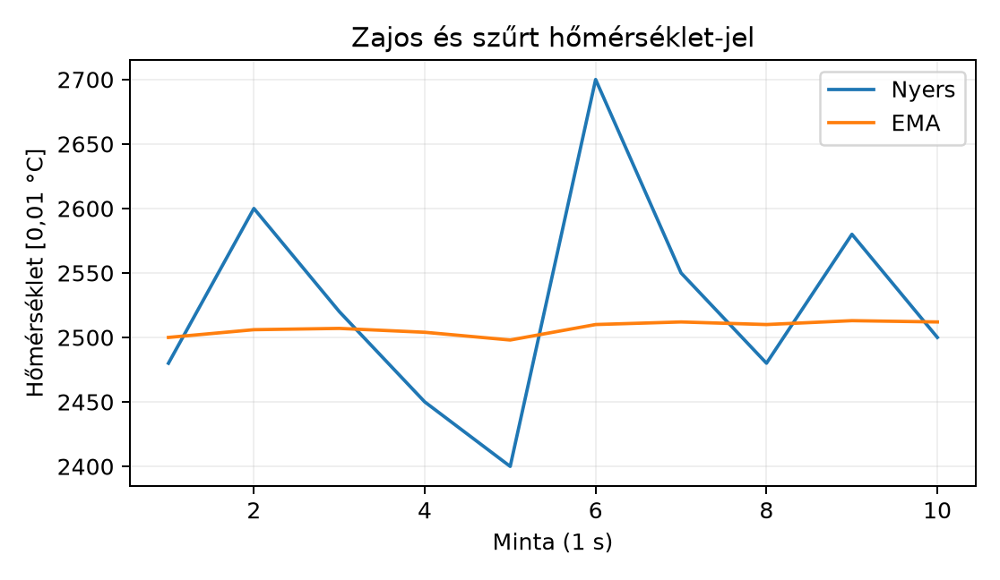

A TerraSense üvegházban a szenzorok jelei ritkán olyan tiszták, mint
egy tankönyvi ábrán. A hőmérsékletmérésre rárakódik a szellőztető motor
elektromos zaja, a talajnedvesség-érzékelő jele megugrik, ha éppen
öntözés közben telítődik a közeg, a páratartalom-érzékelő pedig időnként
a szaturációs tartomány szélére ér. Ha ezeket a nyers ADC-értékeket
kalibrálás és szűrés nélkül küldené fel a ts-node, akkor a
felhőben tárolt idősor tele lenne tüskékkel, téves riasztásokkal, és a
vezérlő oldalon sem lehetne megbízhatóan eldönteni, mikor kell nyitni az
öntözőszelepet.
Ebben az alfejezetben a mérési lánc feldolgozó részét építjük meg: megválasztjuk a mintavételi frekvenciát, a nyers mérésből fizikai mennyiséget számolunk kétpontos kalibrációval, majd a zajt mozgóátlaggal vagy exponenciális szűrővel csökkentjük. Végül megtanuljuk kezelni a mérési tartomány széleit és a kiugró értékeket úgy, hogy ne veszítsünk el valós, gyors eseményeket sem.
A mintavétel a folytonos fizikai jel időben diszkrét mérése. A digitális feldolgozás alapvető feltétele, hogy a mintavételi frekvencia legalább kétszerese legyen a jel legnagyobb értelmes frekvenciájának: . Az üvegházi környezeti jelek rendkívül lassúak: a hőmérséklet tipikusan tizedperces, a talajnedvesség órás skálán változik, ezért az elméleti minimum már 0,001 Hz–0,01 Hz körül van. Ilyen lassú jelnél a másodperces mintavétel is erős túlmintavételezésnek számít, ami lehetőséget ad a zaj átlagolására, de energiába és processzoridőbe kerül.
A gyakorlatban a mintavételi frekvencia megválasztása a következőktől függ:
Definíció. A kalibráció azt a leképezést állítja elő, amely a szenzor nyers, tipikusan ADC-kódban mért kimenetét a mért fizikai mennyiség becsült értékévé alakítja.
A legtöbb érzékelő a működési tartományában jó közelítéssel lineáris, vagy legalábbis üvegházi tartományban annak tekinthető. A kétpontos kalibráció két ismert referenciaponton keresztül egy egyenest illeszt:
ahol a nyers ADC-kód, a fizikai érték, a meredekség, a tengelymetszet.
Legyen a két kalibrációs pont és . A meredekség:
Ezt behelyettesítve az első pontba:
Számpélda. Tegyük fel, hogy a talajnedvesség-érzékelő ADC-kimenete 20 %RH referencia esetén 200, 80 %RH esetén 800. A mérést 0,01 %RH egységben tároljuk, tehát , . Ekkor:
A kalibrált érték ADC = 500 esetén:
azaz 50,00 %RH. Másik példa: ha az offset nem nulla, akkor is ugyanígy számolunk. A levezetés mutatja, hogy a két pont ne legyen túl közel, mert akkor a meredekség érzékeny a mérési hibára.
A fixpontos implementációban az együtthatókat egész számokkal, külön számlálóval és nevezővel adjuk meg, elkerülve a lebegőpontos számítást a célprocesszoron.
Definíció. A mozgóátlag (moving average) az utolsó minta számtani közepe:
Ez egy véges impulzusválaszú szűrő, amely minden mintát egyenlő súllyal vesz figyelembe, és az ablak elhagyásakor a régi minta hirtelen kiesik. Előnye, hogy egyszerű, kiszámítható késleltetést ad, és jól csillapítja a fehér zajt. Hátránya, hogy darab mintát tárolnia kell, és a lépcsőzetes válaszreakciója miatt gyors tranziensekre kevésbé alkalmas.
Definíció. Az exponenciális mozgóátlag (exponential moving average, EMA) egypólusú rekurzív szűrő:
ahol a simítási tényező. Kis erősebb simítást, nagyobb késleltetést ad.
A beágyazott implementációban érdemes -t úgy megválasztani, hogy egész nevezővel írható legyen, mert ekkor:
Ez egyetlen egész osztást igényel, és nem kell tárolni a korábbi mintákat. A esetén az osztást jobbra shiftre cserélhetjük, de a C szabvány szerint a negatív egész jobbra shift implementációfüggő, ezért hordozható kódban inkább osztást használunk.
Definíció. Kiugró értéknek (outlier) nevezzük azt a mintát, amely nagyságrendileg eltér a szűrt jel aktuális értékétől, és valószínűleg mérési hiba, nem pedig valós fizikai változás.
A legegyszerűbb kiugrókezelés az előző szűrt értékhez viszonyított
korlát: ha a delta túl nagy, a mintát vagy eldobjuk, vagy a korlátra
húzzuk, és suspect jelzést adunk. Ez megakadályozza, hogy
egyetlen tüske elrontsa az EMA állapotát, de megőrzi a gyors, korláton
belüli változásokat.
Definíció. A szaturáció azt jelenti, hogy a szenzor vagy az ADC a mérési tartomány szélére ért, ezért a kimenet már nem hordoz érdemi információt a valós értékről.
Ha például a hőmérséklet-érzékelő 0–50 °C közötti tartományra van
kalibrálva, és a nyers ADC a tartomány szélén áll, akkor a valós
hőmérséklet lehet azon kívül is; ilyenkor valid = false
jelzést kell adni. Az érvényességi jelzés a telemetria séma részévé
válik, így a felhőben nem keveredik a valós mérés és a tartományon
kívüli becslés.
A következő ábra egy generált zajos jelet és annak EMA-szűrt változatát mutatja:

A szaggatottan nem látszik, de a lényeg: az EMA kevésbé ingadozik, miközben a trendet követi. A mozgóátlag hasonló simítást ad, de nagyobb késleltetéssel és több memóriával.
| Szempont | Mozgóátlag | EMA | Medián / limit |
|---|---|---|---|
| Memóriaigény | elem puffer | 1 állapot | 1–3 elem |
| Számításigény | Összegzés, osztás | 1 kivonás, 1 osztás, 1 összeadás | 1 összehasonlítás |
| Késleltetés | minta | minta | 0–1 minta |
| Kiugró-érzékenység | Elkeni, de nem dobja el | Elkeni | Kifejezetten kezeli |
| Tranziens válasz | Lépcsőzetes | Exponenciális | Azonnali |
| Jellemző használat | Rádió előtti átlag, lassú telemetria | Gyors állapotjelző, szabályozó bemenet | Érvényesség, hibadetektálás |
Az üvegházi ts-node esetében a telemetria-küldés előtt
egy 8–16 elemű mozgóátlag vagy
EMA jó kompromisszum. A kapcsolódó aktuátor-vezérléshez viszont gyorsabb
követést és kiugrókezelést használunk, mert a szelepnyitási döntést nem
szabad fél perc késleltetéssel meghozni.
ts-node számáraA laborban a sensor_filter modult készítjük el, amely a
későbbi telemetria- és edge-feldolgozó laborok közös alapja lesz. A
modul a Zephyr alkalmazáson belül fut, de a szűrési logika független az
operációs rendszertől, ezért később a gateway C++ implementációban is
hasonló elven használható.
Munkakönyvtár:
mkdir -p ~/iot-labor/i014/src && cd ~/iot-labor/i014A labor a következő fájlokat hozza létre:
src/sensor_filter.h, src/sensor_filter.c,
src/main.c, CMakeLists.txt,
prj.conf.
Először a szűrőmodul fejlécállománya:
/* src/sensor_filter.h */
#ifndef SENSOR_FILTER_H
#define SENSOR_FILTER_H
#include <stdbool.h>
#include <stdint.h>
struct calibration {
int32_t slope_num;
int32_t slope_den;
int32_t offset_scaled;
int32_t raw_min;
int32_t raw_max;
};
struct ema_filter {
int32_t y;
uint32_t denom;
};
struct moving_average {
int32_t buf[8];
uint8_t idx;
uint8_t count;
int32_t sum;
uint8_t n;
};
struct sensor_sample {
int32_t raw;
int32_t value;
bool raw_valid;
bool valid;
bool saturated;
bool suspect;
};
void calibration_apply(const struct calibration *c, int32_t raw,
int32_t *value, bool *valid, bool *saturated);
void ema_init(struct ema_filter *f, uint32_t denom);
int32_t ema_update(struct ema_filter *f, int32_t x);
void ma_init(struct moving_average *f, uint8_t n);
int32_t ma_update(struct moving_average *f, int32_t x);
int32_t reject_outlier(int32_t x, int32_t previous, int32_t limit,
bool *suspect);
#endifA sensor_sample_t-ben a value a kalibrált,
szűrt érték 0,01 °C vagy 0,01 %RH skálán; a valid az
érvényes mérést, a saturated a tartomány szélét, a
suspect a kiugrógyanús mintát jelzi.
A modul implementációja:
/* src/sensor_filter.c */
#include "sensor_filter.h"
#include <string.h>
void calibration_apply(const struct calibration *c, int32_t raw,
int32_t *value, bool *valid, bool *saturated)
{
*saturated = false;
*valid = false;
if (raw < c->raw_min || raw > c->raw_max) {
return;
}
if (raw == c->raw_min || raw == c->raw_max) {
*saturated = true;
}
*value = (c->slope_num * raw) / c->slope_den + c->offset_scaled;
*valid = true;
}
void ema_init(struct ema_filter *f, uint32_t denom)
{
f->denom = denom == 0 ? 1 : denom;
f->y = 0;
}
int32_t ema_update(struct ema_filter *f, int32_t x)
{
int32_t delta = x - f->y;
f->y += delta / (int32_t)f->denom;
return f->y;
}
void ma_init(struct moving_average *f, uint8_t n)
{
if (n > 8) n = 8;
f->n = n == 0 ? 1 : n;
memset(f->buf, 0, sizeof(f->buf));
f->idx = 0;
f->count = 0;
f->sum = 0;
}
int32_t ma_update(struct moving_average *f, int32_t x)
{
if (f->count == f->n) {
f->sum -= f->buf[f->idx];
} else {
f->count++;
}
f->buf[f->idx] = x;
f->sum += x;
f->idx = (f->idx + 1) % f->n;
return f->sum / f->count;
}
int32_t reject_outlier(int32_t x, int32_t previous, int32_t limit,
bool *suspect)
{
int32_t delta = x - previous;
if (delta > limit) {
*suspect = true;
return previous + limit;
}
if (delta < -limit) {
*suspect = true;
return previous - limit;
}
*suspect = false;
return x;
}A main.c egy mockolt érzékelőt futtat, amely 1
másodpercenként állít elő egy zajos hőmérsékleti ADC-jelet, 25,00 °C
körül. A 30. mintánál mesterséges tüskét adunk hozzá:
/* src/main.c */
#include <zephyr/kernel.h>
#include <zephyr/sys/printk.h>
#include "sensor_filter.h"
static int32_t sim_raw(uint32_t step)
{
int32_t base = 2048; /* 25,00 °C a kalibráció szerint */
int32_t noise = ((int32_t)(step * 1103515245u) & 0xFF) - 128;
int32_t spike = (step % 30 == 0) ? 800 : 0;
return base + noise + spike;
}
void main(void)
{
struct calibration cal = {
.slope_num = 5000, /* 50,00 °C = 5000, 0,01 °C skálán */
.slope_den = 4095, /* ADC tartomány 0..4095 */
.offset_scaled = 0,
.raw_min = 100,
.raw_max = 4000,
};
struct ema_filter ema;
struct moving_average ma;
ema_init(&ema, 16);
ma_init(&ma, 8);
uint32_t step = 0;
while (1) {
int32_t raw = sim_raw(step);
int32_t cal_value;
bool valid, saturated;
calibration_apply(&cal, raw, &cal_value, &valid, &saturated);
bool suspect = false;
if (valid) {
int32_t previous = (step == 0) ? 2500 : ema.y;
cal_value = reject_outlier(cal_value, previous, 200, &suspect);
}
int32_t ema_out = ema_update(&ema, valid ? cal_value : 2500);
int32_t ma_out = ma_update(&ma, valid ? cal_value : 2500);
printk("%u raw=%d cal=%d suspect=%d ema=%d ma=%d valid=%d\n",
step, raw, cal_value, suspect, ema_out, ma_out, valid);
k_msleep(1000);
step++;
}
}A buildhez és a futtatáshoz a következő CMakeLists.txt
és prj.conf kell:
# CMakeLists.txt
cmake_minimum_required(VERSION 3.20)
find_package(Zephyr REQUIRED HINTS $ENV{ZEPHYR_BASE})
project(sensor_filter_lab)
target_sources(app PRIVATE src/main.c src/sensor_filter.c)
target_include_directories(app PRIVATE src)# prj.conf
CONFIG_PRINTK=y
CONFIG_SERIAL=yA build és futtatás:
cd ~/iot-labor/i014
west build -b native_sim .
./build/zephyr/zephyr.exeVárt kimenet (részlet, az értékek a generált zaj miatt eltérhetnek):
0 raw=2048 cal=2500 suspect=0 ema=2500 ma=2500 valid=1
1 raw=2043 cal=2494 suspect=0 ema=2499 ma=2497 valid=1
...
29 raw=2047 cal=2498 suspect=0 ema=2498 ma=2498 valid=1
30 raw=2848 cal=3477 suspect=1 ema=2510 ma=2532 valid=1
31 raw=2046 cal=2497 suspect=0 ema=2510 ma=2516 valid=1A 30. mintánál látható tüske kalibrált értéke 3477 lenne, de a
reject_outlier 2500 + 200 = 2700-ra korlátozza, és
suspect=1-et ad. Az EMA így alig mozdul.
Továbbvitt eredmény. A
~/iot-labor/i014/src/sensor_filter.h-ban definiált
sensor_sample_t struktúra (benne raw,
value, valid, saturated,
suspect), valamint a calibration_apply,
ema_update és reject_outlier függvények
alkotják a mérési lánc feldolgozó magját. A Adatformátumok: JSON, CBOR, Protocol Buffers, SenML
alfejezet ebből a struktúrából származtatja a telemetria sémát, az Helyi feldolgozás: szűrés, aggregálás,
eseménydetektálás pedig ezt a modult használja az
edge-szűréshez.
A labor ellenőrzéséhez figyeljük a kimenet stabilitását. A 25,00 °C
alapjel körül az EMA értéknek 1–2 tizedesnyi ingadozás után 2500 körül
kell maradnia. A suspect jelzésnek minden 30. mintánál meg
kell jelennie, és a valid jelzésnek 1-nek kell
maradnia, mert a generált tüske nem lépi át a raw_max
határt.
| Tünet | Ok | Javítás |
|---|---|---|
| Az EMA nem simít, hanem pontosan követi a nyers jelet | denom túl kicsi (pl. 1) |
Állítsd ema_init(&ema, 16)-ra |
| A kimenet túl lassú, a hőmérsékletváltozás késik | denom túl nagy |
Csökkentsd 4–8 közé |
A cal_value negatív vagy irreálisan nagy |
slope_num/den vagy offset_scaled
hibás |
Ellenőrizd a két kalibrációs pontot |
A valid mindig 0 |
raw_min/raw_max szűkebb a generált jel
tartományánál |
Állítsd a határokat a mock jelhez |
A suspect nem jelenik meg tüskénél |
limit túl nagy |
Csökkentsd 200 alá |
| A mozgóátlag eleinte jelentősen eltér | A puffert 0-val inicializáltad, nem a jel kezdeti
értékével |
Első mintával töltsd fel a puffert |
A szaturált ADC-t valós mérésnek tekintik. Ha a
nyers kód a tartomány szélén áll, a kalibrált érték matematikailag
kiszámolható, de fizikailag már nem megbízható. Mindig külön
saturated vagy valid jelzést kell
továbbítani.
A kiugrók eldobásával elveszítik a gyors fizikai
eseményt. A reject_outlier vagy mediánszűrő
önmagában nem tudja eldönteni, hogy a hirtelen változás zaj vagy valós
folyamat-e. Ezért a suspect jelzést el kell menteni, és ha
több egymást követő gyanús minta érkezik, az valószínűleg nem
zaj.
Az EMA shift implementálása negatív delta
esetén. A delta >> shift negatív
delta mellett GCC-n tipikusan aritmetikai shift, de a C
szabvány ezt nem garantálja. Hordozható kódban
delta / (1 << shift) vagy az itt használt
delta / denom alakot alkalmazzuk.
A mintavételi frekvenciát csak a Nyquist-kritérium alapján választják meg. A lassú környezeti jeleknél a hangsúly nem a Shannon–Nyquist feltételen van, hanem a zajcsökkentés, az energia és a reakcióidő közötti kompromisszumon. A másodperces mintavétel ritkán szükséges, de ha van energiakeret, akkor a túlmintavételezés és átlagolás jobb jel-zaj viszonyt adhat.
Fogalmi kérdés. Miért nem elég a mintavételi frekvenciát a jel maximális frekvenciájához igazítani egy zajos IoT-érzékelőnél? Milyen további szempontokat kell figyelembe venni?
Számolási feladat. Egy hőmérséklet-érzékelő nyers ADC-kódja 1000-nél 10,00 °C-ot, 3000-nél 30,00 °C-ot jelent. Határozd meg a kétpontos kalibráció egyenletét 0,01 °C skálán, és add meg a hőmérsékletet ADC = 2200 esetén. Használd az alakot.
Implementációs feladat. A labor
main.c-jében módosítsd a reject_outlier hívást
úgy, hogy gyanús minta esetén a kalibrált értéket ne korlátozza, hanem
teljesen dobja el, és az EMA/MA ne kapjon új mintát. Ellenőrizd, hogy a
tüske után a szűrt jel kevésbé mozdul-e el.
Kiterjesztési feladat. A labor mozgóátlag
ablakát növeld 8-ról 16-ra, az EMA denom-ját pedig
csökkentsd 16-ról 4-re. Futtasd mindkettőt ugyanazzal a mock jellel, és
hasonlítsd össze a késleltetést egy 5,00 °C-os ugrásnál. Melyik szűrő
követi gyorsabban a valós változást, és miért?
A Nyquist-kritérium csak az alulmintavételezésből fakadó torzítást kerüli el. Zajos jelnél túlmintavételezésre van szükség ahhoz, hogy a zajt átlagolással csökkenthessük. Emellett figyelembe kell venni a szenzor konverziós idejét, a rádióadás energiaigényét, a processzor alvó üzemmódjait és a vezérlő hurok válaszidejét.
Skála: 0,01 °C, tehát , , , .
ADC = 2200 esetén:
azaz 22,00 °C. Ha a skála 0,1 °C lenne, az együtthatók tízszer nagyobbak lennének.
cal_value-t nem adjuk át a
szűrőnek. A main.c-ben a következő módosítás:if (valid) {
int32_t previous = (step == 0) ? 2500 : ema.y;
int32_t limited = reject_outlier(cal_value, previous, 200, &suspect);
if (suspect) {
/* eldobjuk a mintát: az EMA/MA nem frissül */
printk("%u raw=%d cal=%d suspect=%d ema=%d ma=%d valid=%d\n",
step, raw, cal_value, suspect,
(step == 0) ? 2500 : ema.y,
(step == 0) ? 2500 : ma_update(&ma, previous),
valid);
k_msleep(1000);
step++;
continue;
}
}Ekkor a tüske nem befolyásolja a szűrt értéket, de a nyers kalibrált
értéket és a suspect jelzést naplózzuk.
A mérési lánc feldolgozó része a nyers ADC-értékből kalibrált, szűrt,
fizikai egységben értelmezett mérést állít elő. A kétpontos kalibráció
egyenletével a szenzor nyers kódját 0,01 °C vagy 0,01 %RH skálára
képezzük le. A zaj csökkentésére mozgóátlagot vagy fixpontos
exponenciális szűrőt használunk; az EMA
formában egyetlen egész osztással számolható. A kiugró értékeket
delta-korláttal szűrjük, és suspect jelzést adunk, a
tartomány szélén pedig saturated és/vagy
valid=false jelzéssel óvjuk a fogyasztót a hamis méréstől.
A laborban elkészült a sensor_filter.h modul a
sensor_sample_t struktúrával, amelyet az Adatformátumok: JSON, CBOR, Protocol Buffers, SenML
és az Helyi feldolgozás: szűrés, aggregálás,
eseménydetektálás alfejezetek használnak tovább.
native_sim
board, a printk és a k_msleep API aktuális
neveit ellenőrizni kell.